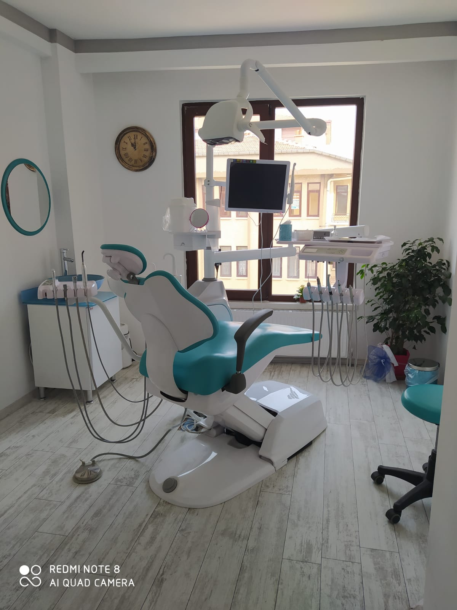

Diş Beyazlatma
Dişlerinizin rengini aydınlatan, muayene sonrası planlanan uygulamalar.

Afyonkarahisar'da sakin, hijyenik ve açık iletişimle ilerleyen bir diş hekimliği deneyimi. Önce sizi dinler, sonra tedaviyi birlikte planlarız.
Dişlerinizin rengini aydınlatan, muayene sonrası planlanan uygulamalar.

Eksik dişlerin yerine kalıcı ve işlevsel çözümler.

Çürük dişlerin doğal görünümü koruyarak onarılması.

Düzenli temizlikle diş eti sağlığının korunması.
Tedavi planı muayene sonrası netleşir.

Temiz ve düzenli bir klinik ortamı; hastalarımız hijyene verdiğimiz önemi sık dile getiriyor.
Ne yapılacağı ve maliyeti baştan açıkça konuşulur; sürpriz yoktur.
Endişeli hastalarla sabırlı, yargılamayan ve hafif elli bir yaklaşım.
Yakın zamanda Türk Diş Hekimleri Birliği (TDB) diş hekimliği kongresine katıldık.
Diş Hekimi

Eli çok hafif; işlem boyunca neredeyse hiçbir şey hissetmedim.Hasta yorumu · Google yorumlarından
Diş korkum vardı, ama sakin ve anlayışlı yaklaşımı sayesinde rahatladım.Hasta yorumu · Google yorumlarından
Klinik temiz, her şey açıkça anlatıldı ve fiyat konusunda net bilgi verildi.Hasta yorumu · Google yorumlarından

Genel olarak yılda en az bir veya iki kez kontrol önerilir. Size uygun aralık ağız sağlığınıza göre değişir ve muayenede birlikte netleştirilir.
Güncel randevu durumu için WhatsApp'tan veya telefonla bize ulaşabilirsiniz.
Amacımız işlemlerin mümkün olduğunca rahat geçmesidir. Her tedavi öncesinde neler yapılacağı anlatılır. Kişisel durumunuza göre ayrıntılar muayenede netleşir; diş korkunuz varsa lütfen önceden belirtin.
Evet, estetik diş hekimliği ve diş beyazlatma hizmetlerimiz bulunuyor. Hangi uygulamanın size uygun olduğu muayeneden sonra belirlenir.
WhatsApp üzerinden 0507 110 02 00 numarasına yazabilir veya bu numarayı ya da 0272 214 24 77 hattını arayabilirsiniz. Hafta içi 09:00–18:30 arasındayız; hafta sonu için arayınız.